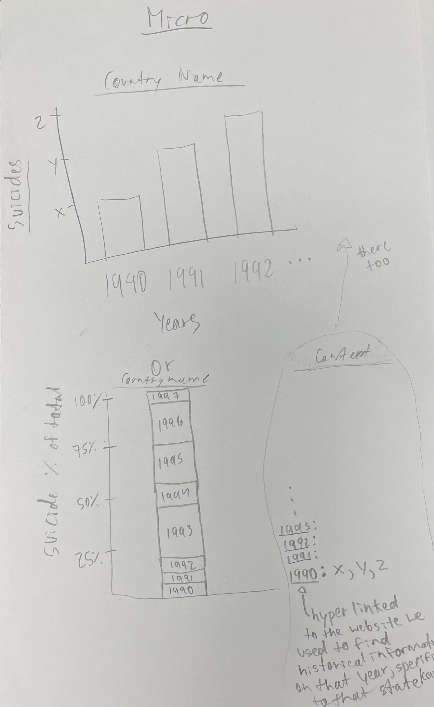

Suicide rates are defined as the deaths deliberately initiated and performed by a person in the full knowledge or expectation of its fatal outcome.
Modeling- Reasonably good modeling. All countries were included and there was a descriptive title, although some were distorted out of proportion.
Visibility- All countries that will be examined are shown and nearly all world countrys are on the map/p>
Consistency- Uses well known map of the world for easy comprehension.
Structure- The labels are on top or next to their respective countries which makes good structure.
Simplicity- Minimal use of words; efficiently conveying the information need.
Documentation- Small notes to help give the users an understanding of what direction certain aspects will go in.
Discoverability[signifiers]- Simple and clear, but there is not a drop down menu and text indicating they can click each country for its micro.
Usability[ease]- Would need the drop down menu for better usage without fatigue of finding the country.
Cultural[privacy]- The rates are related only to countries and not specific cities or neighborhoods, so privacy is ensured.
Notes included and title.
Modeling- Good labeling and graph efficiently communicates the data.
Visibility- All elements are clearly labeled, including the return button, chart, and possible reasoning section./p>
Consistency- Lables are consistent with common graphs and chart conventions.
Structure- Information about the cause is on the bottom, making the viewer see the graphs first and then the possible reasoning. Same applies to the chart with the specific data.
Simplicity- Minimal use of words; efficiently conveying the information needed.
Documentation- The labels serve as documentation.
Discoverability[signifiers]- All elements are clearly labeled. The labeled buttons especially help with discoverability.
Usability[ease]- Graph choice is practical for easy readibility.
Cultural[privacy]- The rates are related only to countries and not specific cities or neighborhoods, so privacy is ensured.
Reasoning summary instead of specific years for reasoning, chart with specific data points, and buttons.
Modeling- Good labeling and modeling.
Visibility- Almost all elements needed are seen, with the exception of a return button./p>
Consistency- Lables are consistent with common graphs.
Structure- Infirmation about the cause is on the side, making the viewer see the graphs first and then the possible reasoning.
Simplicity- Minimal use of words; efficiently conveying the information needed.
Documentation- The labels would help serve as documentation.
Discoverability[signifiers]- Forgot to add a return button so the user can easily go back to the macro.
Usability[ease]- Graph choices are impratical for easy readibility.
Cultural[privacy]- The rates are related only to countries and not specific cities or neighborhoods, so privacy is ensured.
Hyperlinking the websites we will get our information from for the probable causes.
Modeling- Good labeling and modeling.
Visibility- Almost all elements needed are seen, with the exception of a return button./p>
Consistency- Lables are consistent with common graphs.
Structure- Infirmation about the cause is on the side, making teh viewer see teh graphs first and then the possible reasoning.
Simplicity- Minimal use of words; efficiently conveying the information needed.
Documentation- The labels would help serve as documentation.
Discoverability[signifiers]- Forgot to add a return button so the user can easily go back to the macro.
Usability[ease]- Graph choices are impratical for easy readibility.
Cultural[privacy]- The rates are related only to countries and not specific cities or neighborhoods, so privacy is ensured.
Hyperlinking the websites we will get our information from for the probable causes.
We first brainstormed on what topic we wanted to cover and then looked to find csv files we could use.
We made our sketches of what we wanted the website to look like and discussed the pros and cons to each design.
Evaluated the designs with the Design principles and see if we missed anything during our discussion of the pros and cons.
Created the about.html page and reflected on how we should approach creating our website and our division of labor.
Our next step will be to begin implementing our index HTML file and also make sure that we understand how to template our data (ejs)
Then we will use EJS to dynamically insert our data onto our webpage.
We plan on using the plotly software Specifically a dynamic countries map that uses shades of colors to represent density of a variable.
Solomon: generateJSON.js, Build Pipeline, Deploy, drop down menus, Map, graphics, gitignore
Nicole: siteGenerator.js, navbar, index.ejs, about.ejs, countries.ejs, research on reasoning for micro pages, csv adjustement and according generateJSON.js update, header, footer
Solomon+Nicole: CSS/bootstrap done together